Big Orange Crayonmusical thingsRadio 4, Sean Na Na, and Karate Bennington College, The Middle of Nowhere (around Bennington, I guess), VT March 2nd, 2002 I've been getting less keen on writing reviews lately, so I'm keeping with my recent tradition of not writing one, but I'll tell you my story of getting into the show, if you want. If you don't, the pictures are down there... So I got there basically on time, money in hand, expecting it to be no problem since the college's website said that it was five dollars for anyone who wasn't a student. To me, this implied that people who weren't students would actually be allowed into the show. Nope. I got turned back at the security booth. Then I was milling around, trying to figure out what to do (It had been about an hour and a half drive since I got lost on the way, and I wasn't about to give up), and some more kids showed up and also weren't allowed in. They drove three hours from Burlington, and were even less happy than I was about the idea of going back. So we pressed the security people to tell us all of our options and found out that if we could get some students at the college to sign us in (one student could sign in two people) we could get through. So of course we asked the first person we saw if she would sign us in, despite the fact that we were unhappy and wet (it was raining, by the way) stragers. She was fine with it and signed me in, I went to the show, found Geoff and asked for a hand, and he got a couple of guys to go back with me and let everybody else in. Which of course, makes the whole concept of not letting non-students in a farce. And I've gone to shows at much bigger colleges in more urban areas and they don't care and nothing goes wrong, so whatever. The moral: Bennington College fears and hates outsiders. And of course, Karate still kicked ass so it's all good, I guess. Pictures: Radio 4 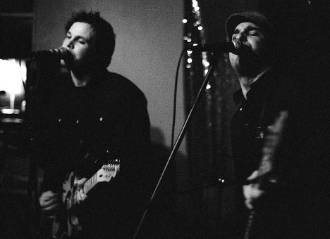 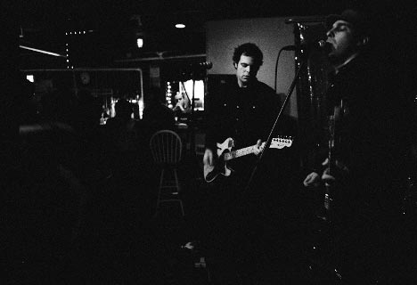 Sean Na Na: 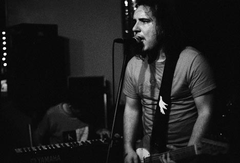 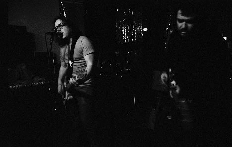 Karate: 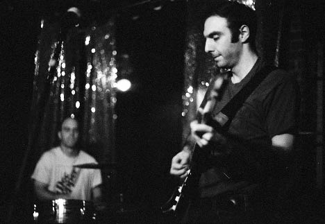 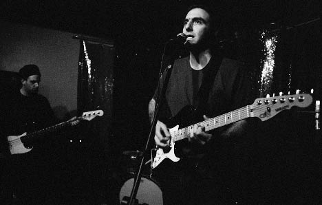 Here's a larger version of this one 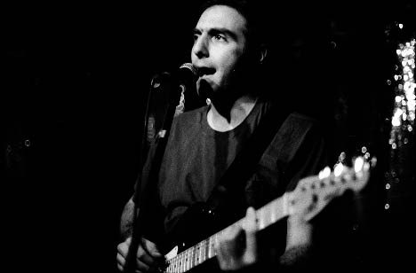 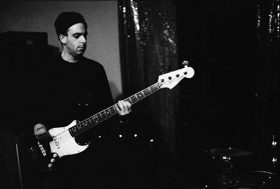 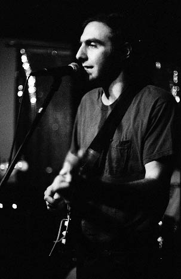 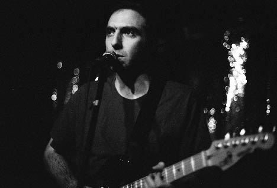 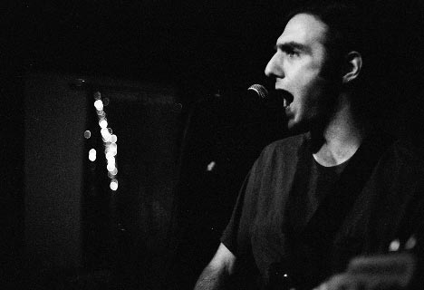 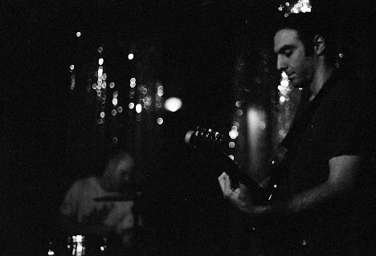 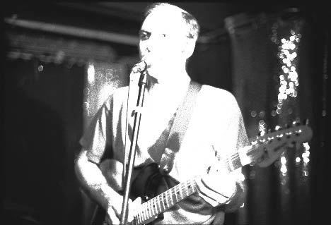 Another guy was taking pictures, too. He was using a flash and we happened to shoot at exactly the same time, meaning this one got all overexposed. Oh well. I have other perfectly good pictures, so why did I put this one up? Eh. 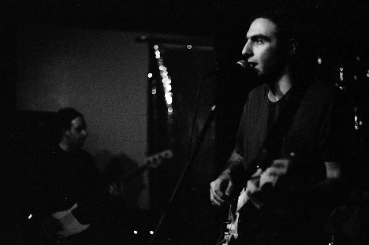 Camera stuff: Body: Nikon F3HP Lenses: 50mm f/1.8, 50mm f/1.4 (yes, I used two 50mm lenses - don't ask) and 24mm f/2.8 Nikkors Film: Fuji Neopan 1600 exposed at 6400, developed 20 minutes in Rodinal (1+100) at 18 degrees. Please don't use these elsewhere unless you are in one of the bands or are a nice person. |
{kind=link}